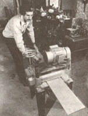
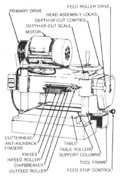

Though it never hurts to have a working knowledge of hand tools, the thought of dimensioning a large board with jack planes is enough to make most home woodworkers cringe. It's a fact of life that nearly all shop projects will go more smoothly if you start with straight stock of consistent thickness . . . and, fortunately, there's a power tool avail able that gives the hobbyist and serious woodcrafter alike the capability to custom-size boards to any dimension desired: the thickness planer.
There was a time when such a tool would have been found only in a large production shop and would have had the capacity to accommodate full-size door frames. But manufacturers with their ears to the ground have developed down-scaled machines that retain the important features of the production jobs, yet cost a fraction as much. These homeshop planers range in price from somewhere under $1,000 (complete and ready to roll) to just over $2,500, and are typically sized to accommodate foot-wide boards, give or take several inches.
Though even a low-cost model represents quite an investment, home thickness planers do have clear-cut limitations that can only be understood by looking into the designs of the machines. Characteristically, the tool is comprised of a frame-mounted table, or bed, that's equipped with steel rollers and has the capability of being raised or lowered in fractional increments. An infeed and an outfeed roller are fixed above the table; both are power driven. A drumlike cutterhead, set between the rollers, is geared to spin at a much higher rate of speed, perhaps 4,000 or 5,000 RPM. The cutterhead is equipped with two or three adjustable knives that run the length of the drum, and a chipbreaker-usually springloaded-is fastened just forward of the cutterhead to both press the stock flat against the table and break the slivers cut by the rotating knives.
This arrangement is, of course, ideal for shaving wood, layer by layer, from pieces of stock, but it's not designed to remove a board's warp or cup. The reason is that, as a warped board passes into the feed roller, it gets flattened against the table in preparation for the cutterhead. After the pass is made, the stock exits from the outfeed roller, where, no longer under pressure, it's likely to spring back to its original shape . . . a bit thinner, but probably no less distorted.
Put another way, a thickness planer will make both sides of a slab of wood smooth and parallel to each other, but it won't necessarily make them straight. That task must be left to a jointer, which prepares face sides and edges by removing high spots without first flattening the board; ideally, a jointer would be used prior to planing to guarantee one square side . . . though often at the cost of a considerable amount of stock on a badly warped board.
Surprisingly enough, all planers function in essentially the same manner. But the differences that do exist among the manufacturer's dozen or so offerings are significant enough to warrant a close inspection prior to making a purchase. Too, some machines are marketed under more than one brand name, and some distributors make their own modifications to a manufacturer's product . . . so be aware of these factors while comparative shopping.
One feature that's a traditional mainstay of commercial shop planers is sheer mass, and plenty of it. Though it'd be difficult to argue against this, more than one manufacturer leans toward portability, and thus relies upon angle steel framing or aluminum castings to reduce weight and expense. Suffice it to say that cast iron is strong, resistant to warpage, and unmatched for dampening vibration; on the other hand, liberal use of it relegates a tool to in-shop, stationary service . . . period.
It's worth noting that some manufacturers offer optional stands, while others incorporate cabinets right into the design. Again, which you choose depends upon how you plan to use your machine. Perhaps the ideal setup in terms of flexibility is one in which a substantial base is used to support a self-contained tool. That way, the business part of the machine can be separated from the stand and carried to another location, where it can be mounted or rejoined to its legs.
If you anticipate planing a large amount of long stock, you'll want to consider support beyond the boundaries of the planer table. Some manufacturers offer optional roller bed extensions or telescoping support stands; at least one utilizes a clever design whereby the table is stationary and the cutter adjusts vertically, thus eliminating height discrepancies when long boards of varying thicknesses are being worked on.
Though convenience is significant, the true measure of a planer is how well it surfaces a board, and this will depend upon a number of factors. First, the cutterhead has to rotate rapidly enough to make a clean slice; its speed is contingent upon the number of blades employed, because the ultimate goal is to achieve a working rate of about 13,000 cuts per minute. Coupled closely with this, however, is the rate at which the stock is fed past the cutterhead. If it's pushed through too fast, the quality of the surface suffers. In practice, a high cutting rate matched with slow feed rate produces the smoothest surface. Last but not least, the diameter of the cutterhead itself comes into play as well. A large drum has a greater swing, which produces a shallow, and thus a smooth, cut.
The mechanism used to drive the cutterhead and feed rollers varies between tools produced by different manufacturers, but-if it's to offer the best possible cut-it's essential that the feed system drive be linked with the cutterhead. That way, if knives meet staunch resistance and slow momentarily, the rate of feed will slacken too, providing a consistent surface on the stock.
Some of the heavier stationary machines use geared transmissions and chain drives to make this connection, while the less massive tools might rely upon belt systems. Usually, multiple V-belts are employed as primary drives to transmit power from the motor to the cutterhead assembly. Naturally, belts require more frequent maintenance than do gears or chains, but they're also less expensive to replace.
When you're choosing a machine, it's important to consider how you'll use it. If your work involves surfacing large pieces of roughsawn hardwood, a stationary model with a 3 or 5-horsepower, 220-volt motor and a higher (or variable) feed rate will probably serve you best. On the other hand, if you're more of a hobbyist and tend to work with smaller pieces of mixed-species stock, perhaps a 1-1/2 or 2-horsepower tool set up with a slow feed would be more to your liking. At any rate, don't judge a machine's capability by the horsepower claims alone; some manufacturers quote peak, rather than continuous, power, so it's best to use the motor's amperage rating as a yardstick. Ten amps equals roughly 1 horsepower at 110 volts . . . or 2 horsepower at 220 volts.
It's also critical that you establish the capacities of the machine you intend to buy before you put your cash down. Determine how wide and thick a piece of stock it will accept, and how thin a board it's able to produce. Too, give some thought to the maximum depth of cut it can make in one pass without stalling (in hardwood), and to how short a section it'll feed without skewing or jamming.
In addition to these essentials, there are other details you'll want to keep an eye out for as you shop around. For the sake of convenience, make certain that the knives on the cutterhead are accessible and reasonably simple to replace and adjust. At least one manufacturer utilizes a built-in shaft lock that makes this process safer and easier. Likewise, consider the adjustment of the feed rollers and the chipbreaker; if these don't work correctly, neither will the tool. Finally, check out the depth-of-cut mechanism, including the scale. It should travel smoothly and consistently, without requiring an excessive amount of hand effort.
Other points to be aware of include features such as an emergency stop control for the feed mechanism; an effective antikickback system for stubborn stock; steel rollers, preferably with a fluted pattern included on the infeed rolls; and a balanced cutterhead assembly.
In general, the machine should be substantial enough to take the kind of abuse that normal use would give it. If possible, check for play in the drive mechanism, the rollers, and the table mount. Also, be aware that power planers are extremely loud in operation . . . some enough so that ear protection is mandatory. Additionally, they create incredible amounts of dust and shavings, so you might want to consider purchasing a dust-collection hood if the model you're interested in is not equipped with one.
Several manufacturers offer optional accessories which are designed to make their tools more versatile. Besides feed rate reduction kits, there are often molder, jointer, and sander attachments available. Whether or not you purchase these extras is up to you . . . but do take the time to get a clear understanding of the warranty, and especially the post-sale availability of parts and service. Remember, even a bargain-priced tool is too expensive if it can't function for lack of a part!
|
 STAFF PHOTO |
 |
|